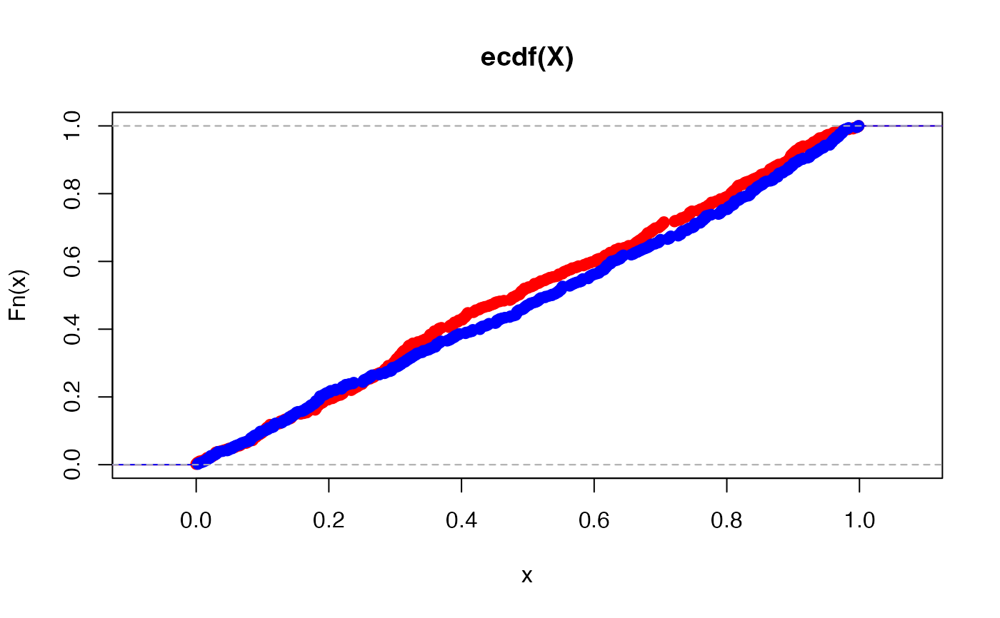

Equivalence Test of Two CDFs Using Mallows Distance
Source:R/mallows-distance-test.R
mallows_equiv_test.RdConduct the equivalence test of two CDFs using the \(p^{\text{th}}\) Mallows distance proposed by Munk and Czado (1998)
Arguments
- vec1
A numeric vector.
- vec2
A numeric vector of the same length as
vec1.- alpha
Trimming parameter \(\alpha \in(0, 0.5)\) for trimmed Mallows' distance.
- delta0
Tolerance value for hypothesis test.
- sig.level
Significance level of the test. Default is 0.05.
Value
A list with the results of the test:
dist.hatis the estimated trimmed Mallows distance between the two distributions, \(\Psi_{\alpha, 2}(\hat{F}, \hat{G})\).sd.hatis the estimate of the standard deviation between the two distributions, \(\hat{\sigma}_{\alpha}\).test.statis the test statistic.pvalis the p-value of the test.test.resultis "REJECT NULL" ifpval\(\leq\)sig.leveland "FAIL TO REJECT NULL" otherwise.ciis the upper (1-sig.level) confidence interval for the square ofdist.hatalphais the trimming parameter used in the test. Sometimes this is slightly different than the inputalpha. This test requires an integer \(a\) such that \(\alpha = a/n\). Thisalphais the smallest \(\alpha\) that makes this equation true. See Munk and Czado (1998) for details.delta0is the tolerance parameter used for the test. This is the same as the inputdelta0.
Details
This is the equivalence test of two CDFs using the trimmed Mallows distance proposed by Munk and Czado (1998) .
Say \(X_i \overset{iid}{\sim} F\) and \(Y_j \overset{iid}{\sim} G\) for \(i,j = 1, ..., n\) where \(F\) and \(G\) are continuous distribution functions. Let \(\hat{F}_n(x) = \frac{1}{n}\sum_{i=1}^n \boldsymbol{1}\{X_i \leq x\}\) denote the empirical cumulative distribution function (ECDF) of \(X\), and \(\hat{F}^{-1}_n(t) = \inf\{x : F_n(x) \geq t\}\) denote the quantile function. Define \(\hat{G}_m(y)\) and \(\hat{G}^{-1}_m(t)\) similarly for \(Y\).
The Trimmed \(p^{th}\) Mallows distance with trimming parameter \(\alpha \in [0, 1/2)\) is : \(\begin{equation} \Psi_{\alpha, p}(F, G) = \frac{1}{1-2\alpha} \left[ \int_{\alpha}^{1-\alpha} | F^{-1}(u) - G^{-1}(u) | ^p du \right]^{1/p}. \end{equation} \)
Munk and Czado (1998) conduct the equivalence test for some suitable \(0<\Delta_0\in \mathbb{R}\): \( \begin{equation} H_0: \Psi_{\alpha, 2}(F, G) \geq \Delta_0 \quad \text{versus} \quad H_A: \Psi_{\alpha, 2}(F, G) < \Delta_0 \end{equation} \)
Then, a consistent level \(\alpha^*\) test for this hypothesis rejects \(H_0\) if, \( \begin{equation}\label{eqn:MallowTest} \left(\frac{nm}{n+m}\right)^{1/2} \frac{\Psi^2_{\alpha_{n \wedge m}, 2}(\hat{F}_n, \hat{G}_n) - \Delta_0^2}{\hat{\sigma}_{\alpha}(F, G)} \leq q_{\alpha^*} \end{equation} \)
where \(q_{\alpha^*}\) is the \(\alpha^*\) quantile of the standard normal distribution
and \(\hat{\sigma}_{\alpha}\) is a consistent estimator of the expected variance between \(F\) and \(G\).
See vignette("mallows-equiv-test") or Appendix A of
Munk and Czado (1998)
for the explicit expression of \(\hat{\sigma}_{\alpha}\).
Currently, this function only runs when \(n=m\). The theory still holds when \(n\neq m\).
See vignette("mallows-equiv-test") for more details on the construction of this test.
Examples
set.seed(2935)
X <- runif(500)
Y <- truncnorm::rtruncnorm(500, a = 0, b = 1, mean = 1/2, sd = 5)
# Plot the ECDFs
plot(ecdf(X), col = "red")
lines(ecdf(Y), col = "blue")

# Run the test for trimming parameter 0.05, tolerance value of 0.8 and
# significance level of 0.05.
test.result <- mallows_equiv_test(X, Y, alpha = 0.05, delta0 = 0.8)
test.result
#> $dist.hat
#> [1] 0.03781523
#>
#> $sd.hat
#> [1] 0.9830526
#>
#> $test.stat
#> [1] -10.27074
#>
#> $pval
#> [1] 4.773456e-25
#>
#> $test.result
#> [1] "REJECT NULL"
#>
#> $ci
#> [1] 0.0000000 0.1036966
#>
#> $alpha
#> [1] 0.05
#>
#> $delta0
#> [1] 0.8
#>